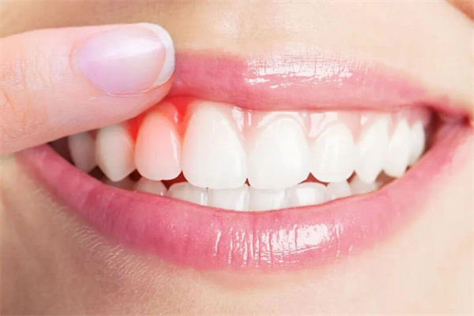

学院通知 · 教学通知
牙龈长脓包，喝凉茶有用吗？这3种“上火” 其实是病！
发布时间：2026/05/12
口腔医生最怕患者说的三个字：上！火！了！ “熊猫er牙医，我牙龈上长了个脓包，肯定是最近火锅吃多了上火！给我开点降火药吧！” 在口腔诊室几乎每天都能听到这样的话。很多人一看到牙龈红肿、长包、疼痛，第一反应就是“上火”了。于是，凉茶一杯接一杯，降火药一盒接一盒，结果呢？ 包包还在，该疼还是疼，甚至还更严重了！ 今天，我们就来揭开这三个被误认为“上火”的口腔疾病的真面目。它们可没那么简单，喝凉茶真的没用！ 一、牙龈红肿长包+刷牙出血（牙周炎） 1.你以为的“上火” 最近太累，抵抗力差，牙龈上火发炎了。 2.真相揭秘： 这其实是牙周炎在作祟！ 牙周炎，简单来说就是牙齿周围的组织（牙周组织）发生了慢性感染。它的罪魁祸首不是“火”，而是牙结石。牙菌斑长期堆积，钙化形成牙结石，不断刺激牙龈，导致牙龈发炎、红肿、易出血，甚至形成牙周袋，里面有脓液溢出。 3.降火方式无效的原因 降火药或许能暂时麻痹神经，让你感觉“好像没那么疼了”，但对附着在牙齿上的牙结石，根本无能为力。牙结石不清除，炎症就会一直存在，并悄悄破坏支撑牙齿的牙槽骨，最终导致牙齿松动、脱落。 4.解决方案 洗牙！洗牙！洗牙！ （重要的事情说三遍） 只有通过专业的洁治（洗牙）和龈下刮治，才能彻底清除牙结石和菌斑，控制炎症。对于已经形成的牙周袋，可能还需要进行牙周手术治疗。 5.爱护口腔小贴士 （1）每年1-2次洗牙：定期洗牙是预防和发现牙周炎最有效的手段。 （2）正确刷牙：学习巴氏刷牙法，重点清洁牙龈沟区域。 （3）使用牙线：牙缝是牙菌斑的“重灾区”，刷牙刷不到，必须用牙线。 二、牙疼，咬东西更疼+牙龈长包（根尖周炎） 1.你以为的“上火” 蛀牙一直没管，现在牙龈上鼓了个包，牙疼得厉害，咬东西都不敢用力，肯定是火气攻心了。 2.真相揭秘：这其实是根尖周炎的典型症状。 你的牙齿因为深度蛀牙、外伤或其它原因，导致牙髓（牙神经）已经坏死。坏死的组织和细菌通过牙根的尖端“跑”到了牙根周围的骨头里，在那里“安营扎寨”，引起化脓和炎症。牙龈上的包，其实是脓液从骨头里穿出来形成的排脓通道，也叫“瘘管”。 3.降火方式无效的原因 问题在牙齿的内部和根尖外的骨头里。喝下去的凉药根本无法到达病灶。就像墙根里水管漏水导致墙皮发霉，你不修水管，光往墙上喷除霉剂是没用的。 4.解决方案：根管治疗！ 医生需要打开牙齿，用专门的器械把根管内坏死的牙髓组织和细菌清理干净，消毒、填充，从“根”上清除感染。之后，通常需要做一个牙冠把患牙保护起来。只有根管治疗才能保住这颗牙！ 5.爱护口腔小贴士 （1）小洞不补，大洞吃苦：发现蛀牙，尽早补牙，别等到牙疼才后悔。 （2）定期口腔检查：每年至少看一次牙医，让医生帮你检查有没有隐藏的蛀牙或其它问题。 三、牙龈长包+嘴张不开（智齿冠周炎） 1.你以为的“上火” 最里面的牙龈又肿又痛，半边脸都肿了，嘴巴都快张不开了，肯定是最近压力大，火气全往这儿拱！ 2.真相揭秘：这是智齿冠周炎发作啦！ 智齿（尤其是没有完全长正、长出来的智齿）和牙龈之间会形成一个很深的盲袋，食物残渣和细菌特别喜欢躲在这里，刷牙又刷不到。当你身体抵抗力下降时，这些细菌就会“开派对”，引起急性炎症，导致牙龈红肿、化脓、疼痛，甚至引起面部肿胀和张口受限。 3.降火方式无效的原因 炎症的根源在于那颗长歪了的智齿和它形成的“藏污纳垢”的盲袋。降火药无法改变这个物理结构。这次靠消炎药和冲洗压下去了，下次身体一累，或者不小心吃到上火的东西，它还会复发。 4.解决方案：拔掉！拔掉！ 急性期先进行消炎和局部冲洗上药，等炎症消退、不疼了之后，尽早拔除这颗惹是生非的智齿，才能永绝后患。 5.爱护口腔小贴士 （1）智齿早检查：很多智齿长歪，在没发炎时就应拍片检查，听从医生建议决定是否拔除。 （2）保持清洁：如果智齿还没拔，刷牙时要特别注意刷到最里面，可以用冲牙器辅助清洁盲袋。 口腔“上火”本质是细菌感染，降火药和凉茶只能暂时缓解疼痛，治标不治本，还可能掩盖病情，导致小病拖成大病。牙龈出现问题时，应第一时间寻求口腔医生帮助，通过洗牙、根管治疗或拔牙等专业手段对症治疗，才是恢复口腔健康的正确方法。
